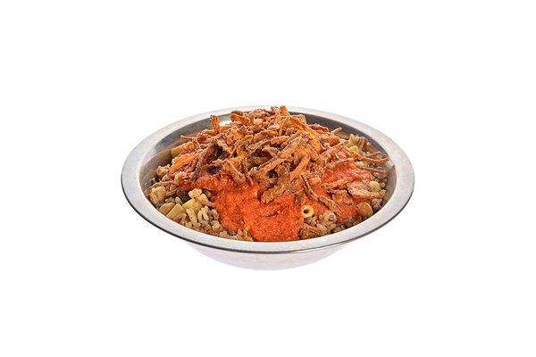

Egyptian Koshary

"Koshary, an Egyptian street food delight,
blends macaroni, rice, lentils, chickpeas,
spiced tomato sauce, and fried onions for
rich, affordable flavor."
Ingredients
-
¾ cup brown lentils
- 4 cups water
- ¾ cup uncooked long grain rice
- 1 cup elbow macaroni
- 2 tablespoons vegetable oil
- 2 large onions, chopped
- 4 cloves garlic, minced
- 1 (15.5 ounce) can diced tomatoes
- ¼ teaspoon red pepper flakes, or to taste
- salt and pepper to taste
Recipe instructions
- the lentils and water in a large saucepan.
- Bring to a boil, then simmer over medium heat for 25 minutes.
- Add the rice to the lentils, and continue to simmer for an additional 20 minutes, or until rice is tender.
- Fill a separate saucepan with lightly salted water and bring to a boil.
- Meanwhile, heat the vegetable oil in a large skillet over medium heat.
- Add onion and garlic; cook and stir until onion is lightly browned.
- Pour in the tomatoes and season with red pepper flakes, salt and pepper.
- Simmer over medium heat for 10 to 20 minutes.
- Add the macaroni and cook until tender, about 8 minutes. Drain.
- In a large serving dish, stir together the lentils, rice and macaroni.
- Mix in the tomato sauce until evenly coated.